МІНІСТЕРСТВО ОСВІТИ І НАУКИ УКРАЇНИ
____________________________________________
(назва коледжу — за зразком)
Відділення ___________________________
ЗВІТ
з навчальної практики
«WEB-технології та WEB-дизайн»
на тему: «Веб-сайт ветеринарної клініки «ВетДім» з онлайн-записом на прийом»
Виконав(ла): студент(ка) групи _______
____________________________
(прізвище, ім'я, по батькові)
Керівник практики:
____________________________
Оцінка: ____________________
2026
Мета практики — набути практичних навичок повного циклу створення веб-проєкту: від технічного завдання і проєктування інтерфейсу до розробки клієнтської та серверної частин, тестування й публікації сайту в інтернеті.
Завдання практики:
Тема проєкту (варіант 2) — веб-сайт ветеринарної клініки «ВетДім». Ключові сутності — лікар і послуга, цільова дія — запис на прийом із вибором лікаря.
Актуальність. Більшість невеликих ветеринарних клінік досі записують пацієнтів лише телефоном. Власникові тварини доводиться телефонувати в робочий час, чекати на лінії й навмання обирати лікаря, не знаючи його спеціалізації та вільного часу. Онлайн-запис із вибором конкретного лікаря та вільного слоту знімає ці проблеми, а для клініки зменшує навантаження на реєстратуру й кількість пропущених дзвінків. Понад 60 % користувачів шукають такі послуги зі смартфона, тому сайт проєктувався за принципом mobile-first.
Результат практики: опублікований сайт з React-фронтендом і Express-API, репозиторій з понад 70 змістовними комітами, документація, тести та цей звіт.
Користувачами сайту є власники домашніх тварин двох основних типів: молоді люди, які користуються переважно смартфоном і цінують швидкість, та люди старшого віку, для яких важливі зрозумілість, великі шрифти й можливість потрапити до «свого» лікаря. Аналіз сайтів ветеринарних клінік і медичних сервісів онлайн-запису показав типові проблеми: відсутність інформації про вільний час, довгі форми без валідації, неадаптовані під мобільні пристрої сторінки, відсутність інформації про спеціалізацію лікарів.
Звідси головні вимоги: каталог лікарів зі спеціалізаціями, прозорі ціни на послуги, покрокова форма запису, в якій показуються лише вільні слоти обраного лікаря, і швидка робота на мобільному.
Технічне завдання оформлене у файлі docs/TZ.md. Структура сайту наведена в таблиці 1.1.
| Сторінка | URL | Призначення |
|---|---|---|
| Головна | / | Переваги клініки, популярні послуги, лікарі, заклик до запису |
| Лікарі (каталог) | /doctors | Список лікарів, фільтр за спеціалізацією, пошук |
| Сторінка лікаря | /doctors/:id | Досвід, освіта, послуги, графік, кнопка запису |
| Послуги | /services | Послуги з цінами, фільтр за категорією |
| Запис (форма) | /booking | Послуга → лікар → дата і час → дані власника |
| Контакти | /contacts | Адреса, телефон, графік, форма зворотного зв'язку |
| 404 | * | Сторінку не знайдено |
Основні функціональні вимоги: фільтрація й пошук лікарів; детальна сторінка лікаря; перехід до запису з уже обраним лікарем чи послугою; покрокова форма, у якій лікарі фільтруються за обраною послугою; недоступність неробочих днів і зайнятих слотів; валідація на клієнті та сервері; екран підтвердження з номером запису; темна тема; бургер-меню.
Нефункціональні вимоги: mobile-first верстка (360, 768, 1280 px), Lighthouse ≥ 90 у чотирьох категоріях, валідний HTML, доступність за WCAG AA, інтерфейс українською мовою.
| Шар | Технології |
|---|---|
| Проєктування | HTML-wireframe, дизайн-система на CSS-токенах |
| Фронтенд | HTML5, CSS3, JavaScript (ES-модулі), React 19, React Router 7, Vite 8 |
| Бекенд | Node.js, Express 5, зберігання в JSON-файлах |
| Тестування | node:test, Puppeteer, Lighthouse, W3C Validator |
| Деплой | GitHub Actions → GitHub Pages; Render (API) |
Створено публічний репозиторій GitHub Kirito072024/vetdim-clinic. Коміти оформлюються за конвенцією Conventional Commits (feat:, fix:, docs:, test:, perf:, ci:), кожна логічна частина роботи — окремий коміт. Результат кожної практичної роботи позначено тегом pr-01 … pr-10. Беклог задач, розбитий за практичними роботами, наведено у docs/BACKLOG.md; файл .gitignore виключає node_modules/, результати збірки та файли середовища.
Створено дві персони (docs/UX.md). Олена, 28 років — маркетологиня, власниця кота, заходить зі смартфона; хоче записатися за 1–2 хвилини без дзвінка у вечірній час. Віктор Петрович, 58 років — власник старого пса з хронічною хворобою, користується ноутбуком; хоче потрапити саме до «свого» хірурга, йому заважають дрібні шрифти й неконтрастні кнопки.
| № | User story |
|---|---|
| 1 | Як власниця кота, я хочу бачити вільний час лікаря на обрану дату, щоб записатися без дзвінка. |
| 2 | Як власник собаки з хронічною хворобою, я хочу почати запис зі сторінки конкретного лікаря, щоб потрапити до фахівця, якому довіряю. |
| 3 | Як новий клієнт, я хочу відфільтрувати лікарів за спеціалізацією, щоб швидко знайти дерматолога. |
| 4 | Як власник тварини, я хочу бачити ціни «від», щоб заздалегідь оцінити вартість візиту. |
| 5 | Як користувач смартфона, я хочу отримати підтвердження з номером запису, щоб бути впевненим, що запис створено. |
Головний сценарій: вхід на головну → «Записатися» (або каталог лікарів → сторінка лікаря → «Записатися до лікаря») → вибір послуги → вибір лікаря → вибір дати й вільного часу → введення даних → підтвердження. Передбачено альтернативні входи зі сторінки лікаря та каталогу послуг, у яких відповідні кроки форми заповнюються автоматично, а також обробку помилок: невалідні дані повертають на той самий крок, зайнятий слот — на крок вибору часу. Діаграми user flow і sitemap виконано у форматі Mermaid у docs/UX.md.
Low-fi wireframe шести екранів (головна, каталог лікарів, сторінка лікаря, форма запису, підтвердження, контакти) зверстано як HTML-сторінку docs/wireframes/index.html у двох версіях: desktop 1440 px (12 колонок, контент 1200 px, gutter 24 px) і mobile 375 px (4 колонки, поля 16 px). Використано лише сірі блоки та реальні тексти заголовків. Перемикач показує накладену сітку, темні блоки клікабельні й утворюють прототип.
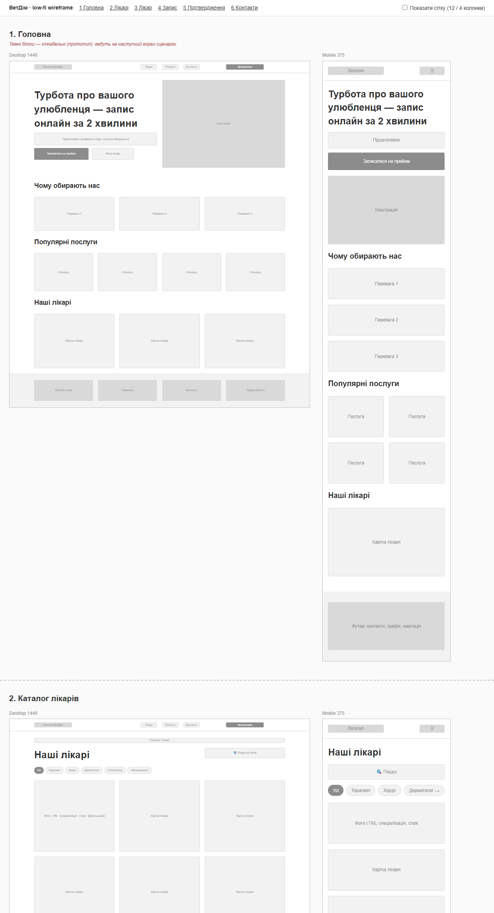
У wireframe враховано закон Хіка (у меню лише три пункти та одна кнопка дії, форма розбита на чотири короткі кроки, список лікарів звужується фільтром) і закон Фіттса (велика контрастна кнопка «Записатися» повторюється в хедері й hero, на мобільному кнопка запису закріплена внизу в зоні великого пальця, слоти часу не менші за 44 × 44 px).
Настрій бренду — «турбота, довіра, тепло». Основний колір — глибокий бірюзовий #0F766E (медицина, спокій), акцентний — теплий кораловий #F97352, фон — кремовий #FBF8F3 замість холодного білого. Шрифт Manrope з підтримкою кирилиці. Контраст усіх пар «текст — фон» перевірено розрахунком за формулою WCAG: основний текст 13,8 : 1, другорядний 5,6 : 1, кнопки 5,5 : 1.
Токени (кольори, розміри шрифтів через clamp(), відступи з кроком 4 px, радіуси, тіні) оголошено як CSS custom properties; темна тема перевизначає лише кольорові токени. Компоненти: кнопки трьох видів, бейджі, чіпи-фільтри, поля форм зі станами помилки, radio-картки, слоти часу, горизонтальний календар, картки лікаря й послуги, індикатор кроків, повідомлення. Усі вони зібрані на живій сторінці static/styleguide.html. Ілюстрації (пес і кіт, портрети лікарів) створено як SVG без стокових фото.
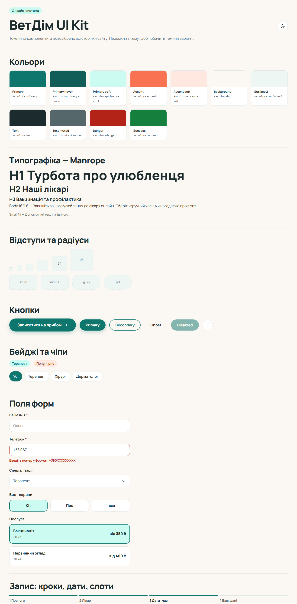
Макети desktop (1280 px) і mobile (360 px) усіх сторінок наведено в папці docs/mockups/ і в додатку А.
Статична версія сайту (папка static/) містить сім HTML-сторінок. Використано семантичні елементи header, nav, main, article, aside, address, footer, хлібні крихти як nav > ol, списки опису dl для статистики й графіка роботи. Кожна сторінка має один h1, посилання «Перейти до вмісту», унікальні title і description, Open Graph. Перевірка W3C Nu HTML Checker: 0 помилок і 0 попереджень на всіх сторінках.
Стилі розділено на п'ять файлів: tokens.css, base.css, components.css, layout.css, pages.css. Базові правила написано для ширини 360 px, а медіазапити min-width: 768px і min-width: 1280px лише додають колонки й змінюють розташування.
Лістинг 3.1 — Темна тема через перевизначення токенів
:root {
--color-bg: #fbf8f3;
--color-primary: #0f766e;
--color-on-primary: #ffffff;
}
:root[data-theme="dark"] {
--color-bg: #0d1716;
--color-primary: #2dd4bf;
--color-on-primary: #04201c;
}
Тему обрано ще до завантаження стилів невеликим скриптом у <head> (з localStorage або prefers-color-scheme), тому сторінка не «блимає». Сітки карток побудовано на CSS Grid (1 → 2 → 3–4 колонки), внутрішнє вирівнювання карток — на Flexbox. Уся картка клікабельна завдяки псевдоелементу посилання ::after з inset: 0.
Код організовано в ES-модулі: ui.js (тема, бургер-меню з закриттям по Escape), api.js (завантаження JSON через Fetch), validation.js (правила валідації), модулі сторінок, які завантажуються динамічно через import() залежно від атрибута data-page. Пошук лікарів має затримку 150 мс (debounce), а вставка даних у HTML проходить через функцію escapeHtml для захисту від XSS.
Лістинг 3.2 — Правило валідації телефону (спільне для клієнта й сервера)
export const normalizePhone = (value = '') => value.replace(/[\s()-]/g, '');
phone(value = '') {
const v = normalizePhone(value);
if (!v) return 'Вкажіть номер телефону';
if (!/^\+380\d{9}$/.test(v)) return 'Введіть номер у форматі +380XXXXXXXXX';
return '';
}
Помилки показуються під полем після втрати фокусу, а після першої помилки — одразу під час введення. Поле отримує aria-invalid="true", а текст помилки пов'язано з ним через aria-describedby, тож скрінрідер його озвучує.
React-застосунок створено командою npm create vite у папці client/. Маршрутизація — React Router (BrowserRouter з basename для публікації в підпапці). Спільний макет Layout містить хедер, Outlet і футер. Головна сторінка і каталоги входять в основний бандл, решта сторінок завантажується окремими чанками через lazy і Suspense.
| Папка | Вміст |
|---|---|
components/ | Header, Footer, Layout, DoctorCard, ServiceCard, Field, Icon, PageHero |
hooks/ | useFetch, useTheme, useDocumentMeta |
lib/ | api.js (клієнт API), validation.js, format.js |
pages/ | Home, Doctors, Doctor, Services, Booking, Contacts, NotFound |
Лістинг 3.3 — Власний хук завантаження даних
export function useFetch(fetcher, deps = []) {
const [state, setState] = useState({ data: null, error: null, loading: true });
const [attempt, setAttempt] = useState(0);
useEffect(() => {
let cancelled = false; // захист від «гонки» відповідей
setState((s) => ({ ...s, loading: true, error: null }));
fetcher()
.then((data) => !cancelled && setState({ data, error: null, loading: false }))
.catch((error) => !cancelled && setState({ data: null, error, loading: false }));
return () => { cancelled = true; };
}, [...deps, attempt]);
const reload = useCallback(() => setAttempt((n) => n + 1), []);
return { ...state, reload };
}
Сторінка запису зберігає стан кроку, обраних послуги, лікаря, дати й часу та полів форми в useState. Списки сумісних послуг і лікарів обчислюються через useMemo, а дата за замовчуванням (перший робочий день лікаря) обчислюється під час рендеру, а не встановлюється в ефекті, що рекомендують правила React. Вільні слоти завантажуються з API при кожній зміні лікаря чи дати. Фільтри каталогів зберігаються в URL (useSearchParams), тож посиланням з обраним фільтром можна поділитися.
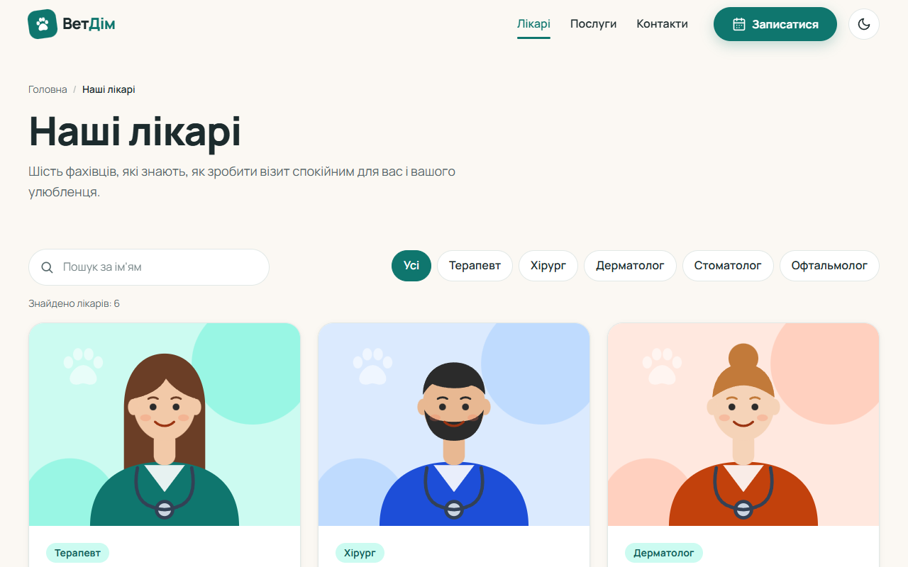
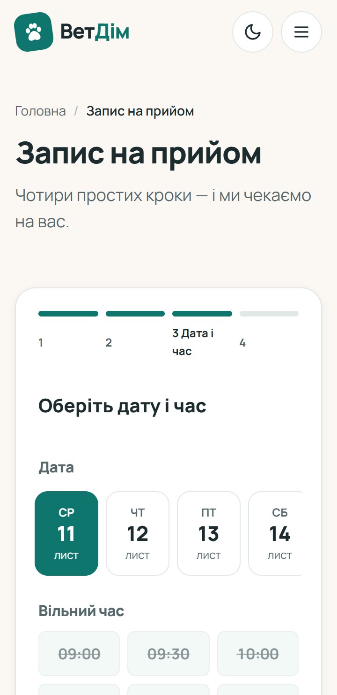
Сервер написано на Express 5 (папка server/). Налаштування застосунку (app.js) відокремлено від запуску (index.js), що дозволяє тестувати API без зайнятого порту. Маршрути розділено на три роутери: довідники (лікарі, послуги, слоти), записи на прийом (CRUD) і зворотний зв'язок. Дані зберігаються в JSON-файлах; запис відбувається через тимчасовий файл і перейменування, а черга промісів не дає двом записам перетнутися.
| Метод | Шлях | Опис | Статуси |
|---|---|---|---|
| GET | /api/doctors?specialty=&q= | Список лікарів | 200 |
| GET | /api/doctors/:id | Лікар | 200, 404 |
| GET | /api/doctors/:id/slots?date= | Вільні слоти | 200, 400, 404 |
| GET | /api/services?category= | Послуги | 200 |
| GET | /api/appointments | Список записів | 200 |
| POST | /api/appointments | Створити запис | 201, 400, 409 |
| PUT | /api/appointments/:id | Перенести запис | 200, 400, 404, 409 |
| DELETE | /api/appointments/:id | Скасувати запис | 204, 404 |
| POST | /api/feedback | Зворотний зв'язок | 201, 400 |
Клієнтській валідації не можна довіряти, бо запит можна надіслати й в обхід форми, тому сервер повторює всі правила і додає перевірки, можливі лише на сервері: існування лікаря та послуги, чи надає лікар цю послугу, чи робочий це день, чи не в минулому дата й час, чи не зайнятий слот. Помилки повертаються зі статусом 400 і об'єктом fields, який клієнт показує під відповідними полями. Зайнятий слот дає статус 409 Conflict, і форма повертає користувача на крок вибору часу з оновленим розкладом.
Лістинг 4.1 — Створення запису
appointmentsRouter.post('/', async (req, res) => {
const { errors, value, conflict } = validateAppointment(req.body);
if (Object.keys(errors).length)
throw new HttpError(400, 'Перевірте правильність заповнення форми', errors);
if (conflict) throw new HttpError(409, SLOT_TAKEN, { time: SLOT_TAKEN });
const appointment = await db.createAppointment(value);
res.status(201).location(`/api/appointments/${appointment.id}`).json(appointment);
});
Express 5 автоматично передає помилки з асинхронних обробників у централізований errorHandler, який формує однакову JSON-відповідь, обробляє некоректний JSON (400) і завеликий запит (413), а деталі внутрішніх помилок (500) пише лише в лог. Дозволені джерела запитів задаються змінною CORS_ORIGIN.
Модуль client/src/lib/api.js інкапсулює всі запити. У режимі розробки Vite проксіює /api на localhost:3001, у production адреса API передається змінною VITE_API_URL. Якщо змінну не задано, вмикається демо-режим: дані читаються з JSON у public/data, а записи зберігаються в localStorage, тож опублікований сайт працює й без сервера.
Написано 11 тестів на вбудованому модулі node:test, які запускають сервер на випадковому порту з тимчасовою папкою даних: довідники й фільтри, слоти, серверна валідація, повний цикл CRUD, конфлікт слоту (409), некоректний JSON і невідомий маршрут. Усі тести проходять і запускаються в CI перед кожним деплоєм.
Аудит проведено в режимі mobile на production-збірці з підключеним API.
| Сторінка | До | Після | LCP до → після |
|---|---|---|---|
| Головна | 100 / 100 / 100 / 92 | 100 / 100 / 100 / 100 | 1,5 → 1,4 с |
| Лікарі | 96 / 100 / 100 / 92 | 98 / 100 / 100 / 100 | 2,7 → 2,2 с |
| Запис | 100 / 100 / 100 / 91 | 100 / 100 / 100 / 100 | 1,5 → 0,8 с |
| Контакти | — | 100 / 100 / 100 / 100 | 0,8 с |
| Сторінка лікаря | — | 96 / 100 / 100 / 100 | 2,6 с |
Оптимізації: додано robots.txt і sitemap.xml (SEO 91–92 → 100); шрифт перенесено з Google Fonts у локальні файли (FCP 1,5 → 0,8 с); каталоги включено в основний бандл, щоб скоротити ланцюжок запитів до головного зображення (LCP 2,7 → 2,2 с); скелетон сторінки запису резервує висоту форми (CLS 0,18 → 0).
Складено чек-лист із 22 сценаріїв (docs/TESTING.md). Усі сценарії автоматизовано скриптами Puppeteer у папці e2e/: повний сценарій запису з помилками валідації, бургер-меню і клавіша Escape, збереження теми, пошук, сторінка 404, форма контактів, поведінка при недоступному API, навігація з клавіатури та перевірка відсутності горизонтальної прокрутки на 360, 768 і 1280 px для всіх маршрутів.
| Сценарій | Очікуваний результат | Статус |
|---|---|---|
| Підтвердження з порожніми полями | 3 помилки, фокус на першому полі | ✔ |
| Телефон «+38 (067) 123-45-67» | Приймається, нормалізується | ✔ |
| Повторний запис на той самий слот | 409, повернення до вибору часу | ✔ |
| API недоступний | Повідомлення і кнопка повтору | ✔ |
| Усі маршрути на 360 / 768 / 1280 px | Немає горизонтальної прокрутки | ✔ |
Реалізовано: skip-link, семантичні орієнтири, підписи всіх полів, aria-invalid та aria-describedby для помилок, aria-pressed для фільтрів і слотів, aria-expanded для меню, aria-live для динамічних змін, перенесення фокусу між кроками форми, видимий :focus-visible, цілі натискання не менші за 44 px, підтримку prefers-reduced-motion. Для SEO кожна сторінка встановлює власні title, description і Open Graph через хук useDocumentMeta.
Сайт можна встановити як застосунок: manifest.webmanifest з іконками (зокрема maskable) і ярликами «Запис» та «Лікарі». Service worker кешує сторінки й відповіді API за стратегією network-first (офлайн показуються останні збережені дані), а статичні файли з хешем в імені — за стратегією cache-first. Перевірка в браузері: помилок встановлення немає, каталог лікарів і контакти відкриваються без мережі.
Кожен push у гілку main запускає GitHub Actions: тести API → лінтер → збірка React з BASE_PATH=/vetdim-clinic/ → копіювання index.html у 404.html (щоб прямі посилання на маршрути SPA працювали на GitHub Pages) → публікація на GitHub Pages. API розгортається на Render за файлом render.yaml з автодеплоєм із main і часовим поясом Europe/Kyiv.
git push (main)
│
├──► GitHub Actions ──► npm test ──► lint + build ──► GitHub Pages
│ kirito072024.github.io/vetdim-clinic
│ │ fetch /api
└──► Render (render.yaml) ──► Express API ◄──────────────────┘
Під час практики використовувався AI-агент Claude Code (Anthropic) у редакторі VS Code. Він застосовувався для генерації документації, розмітки, стилів, JavaScript і React-коду, серверної частини, тестів і скриптів перевірки. Робота велася поетапно за практичними роботами, кожна частина фіксувалася окремим комітом.
Код, згенерований AI, не був безпомилковим, і дефекти знаходились саме завдяки перевіркам (табл. 6.1). Повний перелік наведено в docs/AI.md.
| Проблема | Як виявлено | Виправлення |
|---|---|---|
React падав при переході між сторінками (destroy is not a function) | e2e-тест | Ефект () => window.scrollTo(0,0) повертав Promise; тіло ефекту взято у фігурні дужки |
Попередження лінтера про setState в ефектах | oxlint | Значення обчислюються під час рендеру |
| Нумерація в хлібних крихтах, розтягнутий бейдж | Скриншоти | Виправлено CSS |
Конфлікт класу .step | Огляд коду | Перейменовано на .form-step |
| Попередження W3C, SEO 92, CLS 0,18 | W3C, Lighthouse | Окремі коміти fix: / perf: |
Висновок щодо AI: інструмент значно прискорює роботу, але відповідальність за результат лишається на розробникові. Без тестів, лінтера, валідатора й аудиту частина помилок потрапила б у фінальну версію.
Під час навчальної практики створено веб-проєкт повного циклу — сайт ветеринарної клініки «ВетДім» з онлайн-записом на прийом до обраного лікаря.
Що вдалося: виконано всі десять практичних робіт і обов'язкові вимоги: сім сторінок, адаптивна верстка 360/768/1280 px, React-клієнт на Vite, власне Express REST API з CRUD і серверною валідацією, валідний HTML, Lighthouse 96–100 у всіх категоріях (mobile), PWA, автодеплой із гілки main, понад 70 змістовних комітів і десять тегів pr-01…pr-10. Особливо вдалими вважаю покрокову форму запису з фільтрацією лікарів за послугою та захистом від подвійного бронювання, а також автоматизовані перевірки.
Що можна покращити: замінити JSON-файли на базу даних (PostgreSQL або SQLite), бо на безкоштовному тарифі Render файлова система тимчасова; додати авторизацію та особистий кабінет зі списком записів і можливістю скасування; надсилати SMS/email-нагадування; проєктування виконувалось без Figma (за дозволом викладача), тому макети представлено скриншотами зверстаних сторінок.
Набуті навички: складання ТЗ і беклогу; UX-проєктування (персони, user stories, user flow, wireframe); створення дизайн-системи на CSS-токенах; семантична верстка, Flexbox, Grid, mobile-first; модульний JavaScript і Fetch API; React (компоненти, стан, хуки, маршрутизація, lazy-завантаження); розробка REST API на Express; автотести, e2e-тестування, аудит Lighthouse; налаштування CI/CD у GitHub Actions; критична перевірка коду, згенерованого AI.
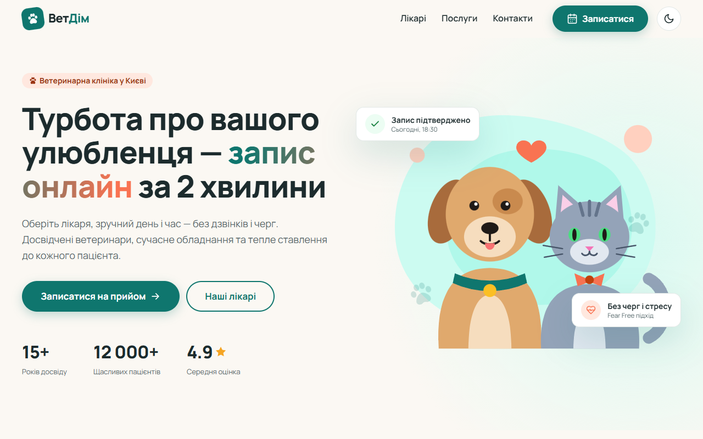
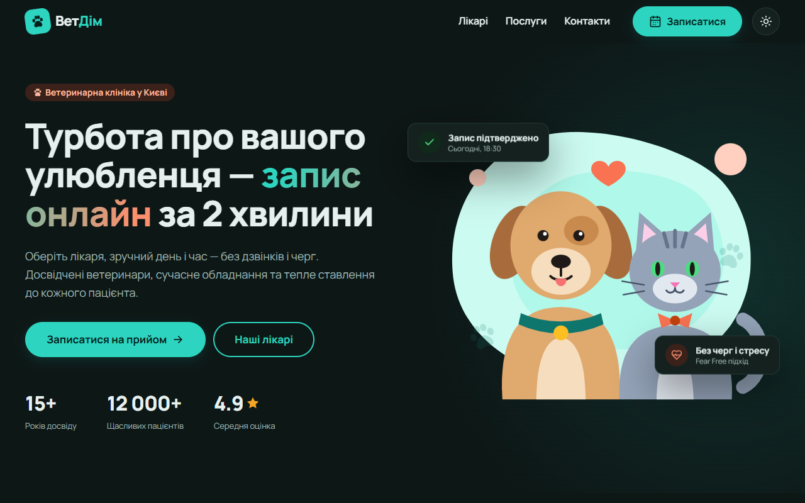
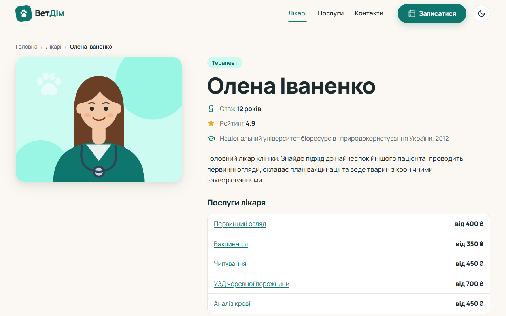
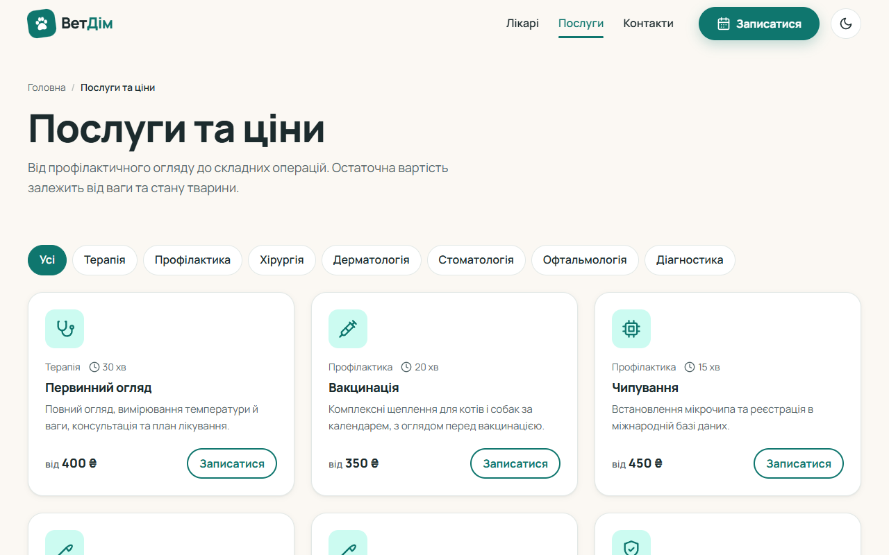
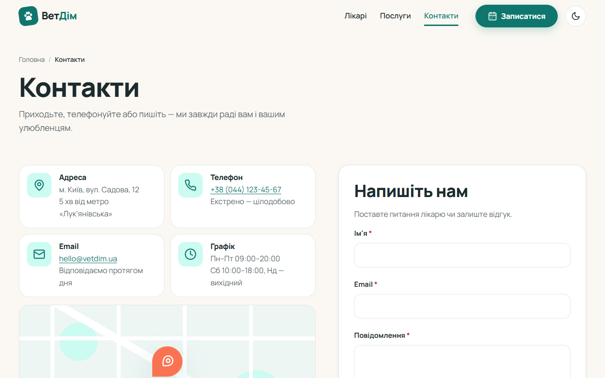
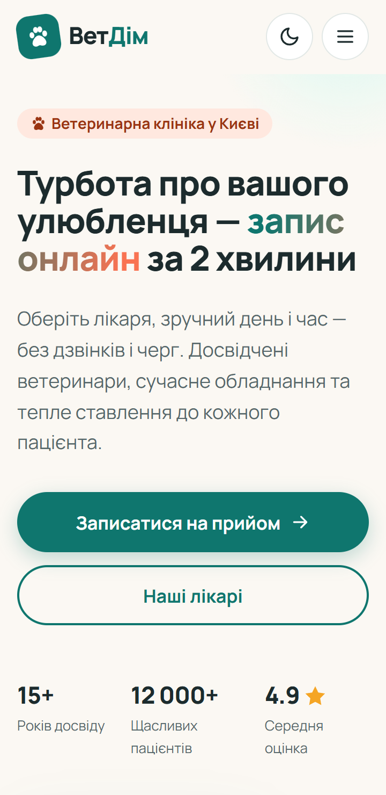
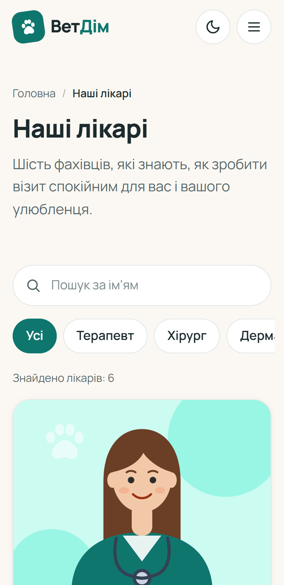
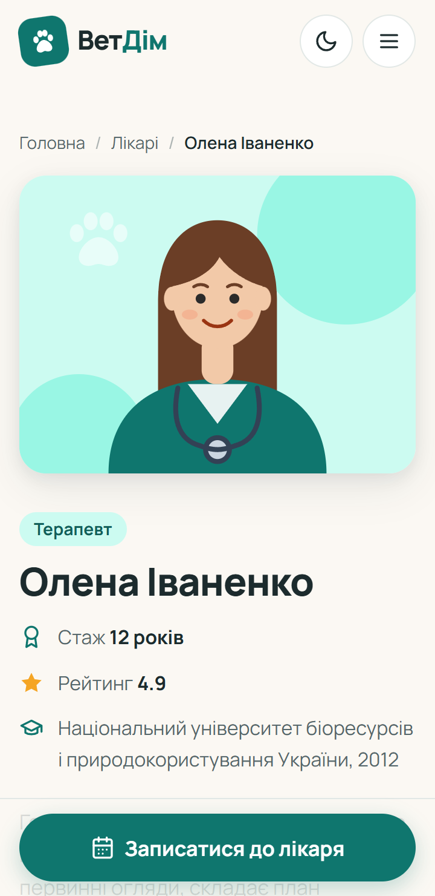
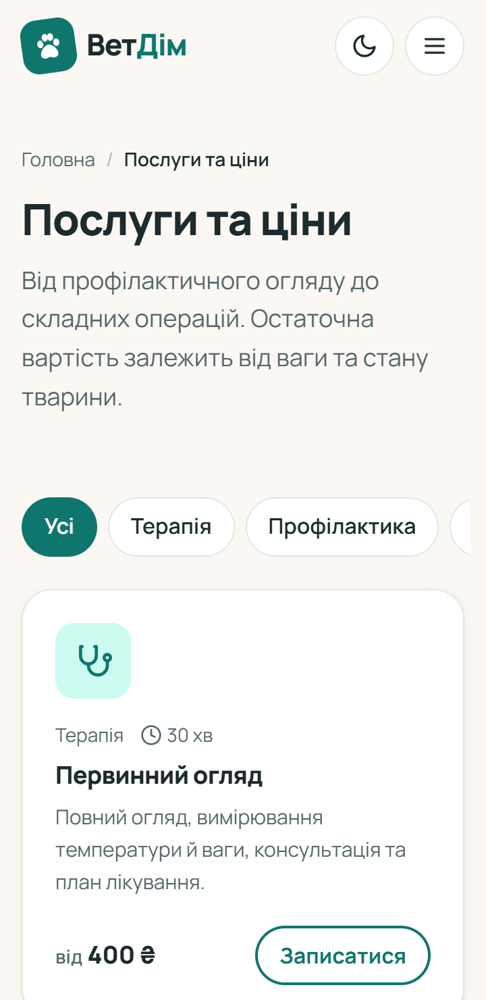
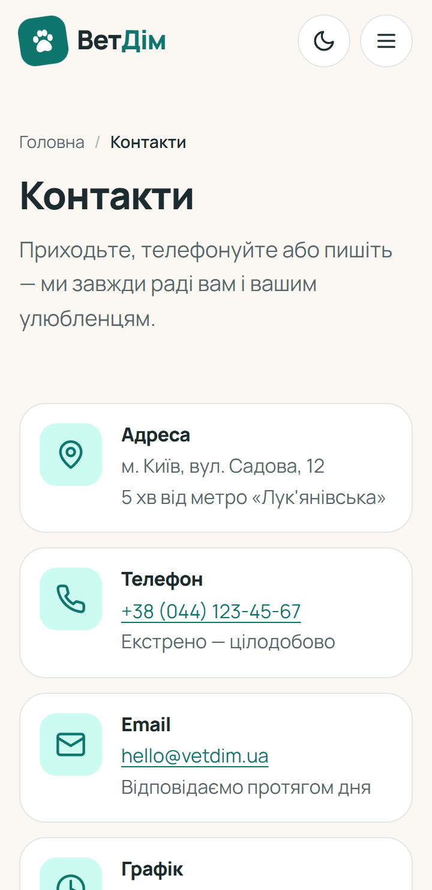
Сайт
kirito072024.github.io/vetdim-clinic
Репозиторій
github.com/Kirito072024/vetdim-clinic